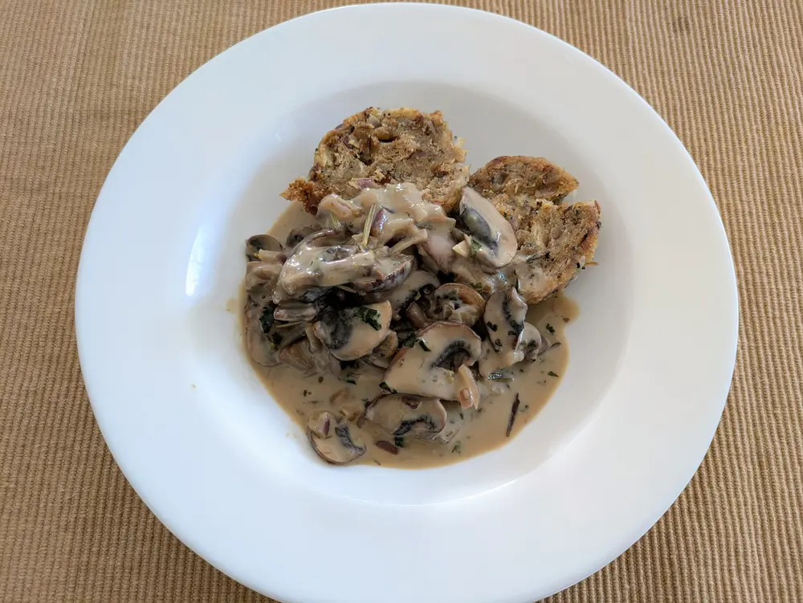

Recipe | Semmelknödel with Creamy Mushroom

Semmelknödel with Creamy Mushroom
Knödel (in German)
Recipe website
Mushroom sauce for Knödel
Ingredients
For 4 people:
- Mushrooms
- 1 onion
- 1 or 2 pods garlic
- ½-1 cube vegetable broth
- Rosemary
- Sage
- Thyme
- Basil
- Salt
- 1-2 tbsp cream
- 1 tbsp all purpose flour
Steps
- Slice/dice the mushroom. Chop onion and garlic fine.
- Toast mushroom in a pan without oil. Once slightly charred, keep aside.
- Toast onion and garlic in some butter. Add the mushrooms, and season with herbs.
- Add ½ cup water, dissolve the vegetable broth and add some flour in one spot. Stir quick to remove lumps and dissolve evenly. Add cream and adjust water as desired for consistency of sauce.